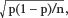
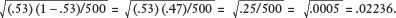
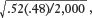
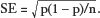
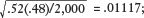
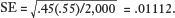

How we know that 64 percent of
Americans support the death penalty
(with a sampling error ± 3 percent)
In late 2011, the New York Times ran a front-page story reporting that “a deep sense of anxiety and doubt about the future hangs over the nation.”1 The story delved into the psyche of America, offering insights into public opinion on topics ranging from the performance of the Obama administration to the distribution of wealth. Here is a snapshot of what Americans had to say in the fall of 2011:
• A shocking 89 percent of Americans said that they distrust government to do the right thing, the highest level of distrust ever recorded.
• Two-thirds of the public said that wealth should be more evenly distributed in the country.
• Forty-three percent of Americans said that they generally agreed with the views of the Occupy Wall Street movement, an amorphous protest movement that began near Wall Street in New York and was spreading to other cities around the country.* A slightly higher percentage, 46 percent, said that the views of the people involved in the Occupy Wall Street movement “generally reflect the views of most Americans.”
• Forty-six percent of Americans approved of Barack Obama’s handling of his job as president—and an identical 46 percent disapproved of his job performance.
• A mere 9 percent of the public approved of the way Congress was handling its job.
• Even though the presidential primaries would begin in only two months, roughly 80 percent of Republican primary voters said “it was still too early to tell whom they will support.”
These are fascinating figures that provided meaningful insight into American opinions one year in advance of a presidential race. Still, one might reasonably ask, How do we know all this? How can we draw such sweeping conclusions about the attitudes of hundreds of millions of adults? And how do we know whether these sweeping conclusions are accurate?
The answer, of course, is that we conduct polls. Or in the example above, the New York Times and CBS News can do a poll. (The fact that two competing news organizations would collaborate on a project like this is the first clue that conducting a methodologically sound national poll is not cheap.) I have no doubt that you are familiar with polling results. It may be less obvious that the methodology of polling is just one more form of statistical inference. A poll (or survey) is an inference about the opinions of some population that is based on the views expressed by some sample drawn from that population.
The power of polling stems from the same source as our previous sampling examples: the central limit theorem. If we take a large, representative sample of American voters (or any other group), we can reasonably assume that our sample will look a lot like the population from which it is drawn. If exactly half of American adults disapprove of gay marriage, then our best guess about the attitudes of a representative sample of 1,000 Americans is that about half of them will disapprove of gay marriage.
Conversely—and more important from the standpoint of polling—if we have a representative sample of 1,000 Americans who feel a certain way, such as the 46 percent who disapprove of President Obama’s job performance, then we can infer from that sample that the general population is likely to feel the same way. In fact, we can calculate the probability that our sample results will deviate wildly from the true attitudes of the population. When you read that a poll has a “margin of error” of ± 3 percent, this is really just the same kind of 95 percent confidence interval that we calculated in the last chapter. Our “95 percent confidence” means that if we conducted 100 different polls on samples drawn from the same population, we would expect the answers we get from our sample in 95 of those polls to be within 3 percentage points in one direction or the other of the population’s true sentiment. In the context of the job approval question in the New York Times/CBS poll, we can be 95 percent confident that the true proportion of all Americans who disapprove of President Obama’s job rating lies in the range of 46 percent ± 3 percent, or between 43 percent and 49 percent. If you read the small print on the New York Times/CBS poll (as I urge you to do), that’s pretty much what it says: “In theory, in 19 cases out of 20, overall results based on such samples will differ by no more than 3 percentage points in either direction from what would have been obtained by seeking to interview all American adults.”
One fundamental difference between a poll and other forms of sampling is that the sample statistic we care about will be not a mean (e.g., 187 pounds) but rather a percentage or proportion (e.g., 47 percent of voters, or .47). In other respects, the process is identical. When we have a large, representative sample (the poll), we would expect the proportion of respondents who feel a certain way in the sample (e.g., the 9 percent who think Congress is doing a good job) to be roughly equal to the proportion of all Americans who feel that way. This is no different from assuming that the mean weight for a sample of 1,000 American men should be roughly equal to the mean weight for all American men. Still, we expect some variation in the percentage who approve of Congress from sample to sample, just as we would expect some variation in mean weight as we took different random samples of 1,000 men. If the New York Times and CBS had conducted a second poll—asking the same questions to a new sample of 1,000 U.S. adults—it is highly unlikely that the results of the second poll would have been identical to the results of the first. On the other hand, we should not expect the answers from our second sample to diverge widely from the answers given by the first. (To return to a metaphor used earlier, if you taste a spoonful of soup, stir the pot, and then taste again, the two spoonfuls are going to taste similar.) The standard error is what tells us how much dispersion we can expect in our results from sample to sample, which in this case means poll to poll.
The formula for calculating a standard error for a percentage or proportion is slightly different from the formula introduced earlier; the intuition is exactly the same. For any properly drawn random sample, the standard error is equal to  where p is the proportion of respondents expressing a particular view, (1 – p) is the proportion of respondents expressing a different view, and n is the total number of respondents in the sample. You should see that the standard error will fall as the sample size gets larger, since n is in the denominator. The standard error also tends to be smaller when p and (1 – p) are far apart. For example, the standard error will be smaller for a poll in which 95 percent of respondents express a certain view than for a poll in which opinions tend to split 50-50. This is just math, since (.05)(.95) = .047, while (.5)(.5) = .25; a smaller number in the numerator of the formula leads to a smaller standard error.
As an example, assume that a simple “exit poll” of 500 representative voters on election day finds that 53 percent voted for the Republican candidate; 45 percent of voters voted for the Democrat; and 2 percent supported a third-party candidate. If we use the Republican candidate as our proportion of interest, the standard error for this exit poll would be 
For simplicity, we’ll round the standard error for this exit poll to .02. So far, that’s just a number. Let’s work through why that number matters. Assume the polls have just closed, and you work for a television network that is keen to declare a winner in the race before the full results are available. You are now the official network data cruncher (having read two-thirds of this book), and your producer wants to know whether it is possible to “call the race” on the basis of this exit poll.
You explain that the answer depends on how confident the network people would like to be in the announcement—or, more specifically, what risk they are willing to take that they will get it wrong. Remember, the standard error gives us a sense of how often we can expect our sample proportion (the exit poll) to lie reasonably close to the true population proportion (the election outcome). We know that roughly 68 percent of the time we can expect the sample proportion—the 53 percent of voters who said they voted for the Republican in this case—to be within one standard error of the true final tally. As a result, you tell your producer “with 68 percent confidence” that your sample, which shows the Republican getting 53 percent of the vote ± 2 percent, or between 51 and 55 percent, has captured the Republican candidate’s true tally. Meanwhile, the same exit poll shows that the Democratic candidate has received 45 percent of the vote. If we assume that the vote tally for the Democratic candidate has the same standard error (a simplification that I’ll explain in a minute), we can say with 68 percent confidence that the exit poll sample, which shows the Democrat with 45 percent of the vote ± 2 percent, or between 43 and 47 percent, contains the Democrat’s true tally. According to this calculation, the Republican is the winner.
The graphics department rushes to do a fancy three-dimensional image that you can flash on the screen for your viewers:
Republican 53%
Democrat 45%
Independent 2%
(Margin of Error 2%)
At first, your producer is impressed and excited, in large part because the above graphic is 3-D, multicolored, and able to spin around on the screen. However, when you explain that roughly 68 times out of 100 your exit poll results will be within one standard error of the true election outcome, your producer, who has twice been sent by the courts to anger management programs, points out the obvious math—32 times out of 100 your exit poll will not be within one standard error of the true election outcome. Then what?
You explain that there are two possibilities: (1) the Republican candidate could have received even more votes than your poll predicted, in which case you still will have called the election correctly. Or (2) there is a reasonably high probability that the Democratic candidate has received far more votes than your poll has reported, in which case your fancy 3-D, multicolored, spinning graphic will have reported the wrong winner.
Your producer hurls a coffee mug across the room and uses several phrases that violate her probation. She screams, “How can we be [deleted] sure that we have the right [deleted] result?”
Ever the statistics guru, you point out that you cannot be certain of any result until all of the votes are counted. However, you can offer a 95 percent confidence interval instead. In this case, your spinning, 3-D, multicolored graphic will be wrong, on average, only 5 times out of 100.
Your producer lights a cigarette and seems to relax. You decide not to mention the ban on smoking in the workplace, as that turned out disastrously last time. However, you do share some bad news. The only way the station can be more confident of its polling results is by broadening the “margin of error.” And when you do that, there is no longer a clear winner in the election. You show your boss the new fancy graphic:
Republican 53%
Democrat 45%
Independent 2%
(Margin of Error 4%)
We know from the central limit theorem that roughly 95 percent of sample proportions will lie within two standard errors of the true population proportion (which is 4% in this case). Therefore, if we want to be more confident of our polling results, we have to be less ambitious in what we are predicting. As the above graphic illustrates (without the 3-D and color), at the 95 percent confidence level, the television station can announce that the Republican candidate has earned 53 percent of the vote ± 4 percent, or between 49 and 57 percent of the votes cast. Meanwhile, the Democratic candidate has earned 45 percent ± 4 percent, or between 41 and 49 percent of the votes cast.
And, yes, now you have a new problem. At the 95 percent confidence level, you cannot reject the possibility that the two candidates may be tied with 49 percent of the vote each. This is an inevitable trade-off; the only way to become more certain that your polling results will be consistent with the election outcome without new data is to become more timid in your prediction. Think about a nonstatistical context. Suppose you tell a friend that you are “pretty sure” that Thomas Jefferson was the third or fourth president. How can you become more confident of your historical knowledge? By being less specific. You are “absolutely positive” that Thomas Jefferson was one of the first five presidents.
Your producer tells you to order a pizza and prepare to stay at work all night. At that point, statistical good fortune shines upon you. The results of a second exit poll come across your desk with a sample of 2,000 voters. These results show the following: Republican (52 percent); Democrat (45 percent); Independent (3 percent). Your producer is now thoroughly exasperated, since this poll suggests that the gap between the candidates has narrowed, making it even harder for you to call the race in a timely manner. But wait! You point out (heroically) that the sample size (2,000) is four times as large as the sample in the first poll. As a result, the standard error will shrink significantly. The new standard error for the Republican candidate is  which is .01.
If your producer is still comfortable with a 95 percent confidence level, you can declare the Republican candidate the winner. With your new .01 standard error, the 95 percent confidence intervals for the candidates are the following: Republican: 52 ± 2, or between 50 and 54 percent of the votes cast; Democrat: 45 ± 2, or between 43 and 47 percent of the votes cast. There is no longer any overlap between the two confidence intervals. You can predict on air that the Republican candidate is the winner; more than 95 times out of 100 you will be correct.*
But this case is even better than that. The central limit theorem tells us that 99.7 percent of the time a sample proportion will be within three standard errors of the true population proportion. In this election example, our 99.7 percent confidence intervals for the two candidates are the following: Republican, 52 ± 3 percent, or between 49 and 55 percent; Democrat, 45 ± 3 percent, or between 42 and 48 percent. If you report that the Republican candidate has won, there is only a tiny chance that you and your producer will be fired, thanks to your new 2,000-voter sample.
You should see that a bigger sample makes for a shrinking standard error, which is how large national polls can end up with shockingly accurate results. On the other hand, smaller samples obviously make for larger standard errors and therefore a larger confidence interval (or “margin of sampling error,” to use the polling lingo). The fine print in the New York Times/CBS poll points out that the margin of error for the questions about the Republican primary is 5 percentage points, compared with 3 percentage points for other questions in the poll. Only self-described Republican primary and caucus voters were asked these questions, so the sample size for this subgroup of questions fell to 455 (compared with 1,650 adults for the balance of the poll).
As usual, I’ve simplified lots of things in this chapter. You might have recognized that in my election example above, the Republican and Democratic candidates should each have their own standard error. Think again about the formula:  The size of the sample, n, is the same for both candidates, but p and (1 – p) will be slightly different. In the second exit poll (with the 2,000-voter sample), the standard error for the Republican is  for the Democrat,  Of course, for all intents and purposes, those two numbers are the same. For that reason, I have adopted a common convention, which is to take the higher standard error of the two and use that for all of the candidates. If anything, this introduces a little extra caution into our confidence intervals.
Many national polls that ask multiple questions will go one step further. In the case of the New York Times/CBS poll, the standard error should technically be different for each question, depending on the response. For example, the standard error for the finding that 9 percent of the public approves of the way Congress is handling its job should be lower than the standard error for the question finding that 46 percent of the public approves of the way President Obama has handled his job, since .09 × (.91) is less than .46 × (.54)—.0819 versus .2484. (The intuition behind this formula is explained in a chapter appendix.)
Since it would be both confusing and inconvenient to have a different standard error for each question, polls of this nature will typically assume that the sample proportion for each question is .5 (or 50 percent)—generating the largest possible standard error for any given sample size—and then adopt that standard error to calculate the margin of sampling error for the entire poll.*
When done properly, polls are uncanny instruments. According to Frank Newport, editor in chief of the Gallup Organization, a poll of 1,000 people can offer meaningful and accurate insights into the attitudes of the entire country. Statistically speaking, he’s right. But to get those meaningful and accurate results, we have to conduct a proper poll and then interpret the results correctly, both of which are much easier said than done. Bad polling results do not typically stem from bad math when calculating the standard errors. Bad polling results typically stem from a biased sample, or bad questions, or both. The mantra “garbage in, garbage out” applies in spades when it comes to sampling public opinion. Below are the key methodological questions one ought to ask when conducting a poll, or when reviewing the work of others.
Is this an accurate sample of the population whose opinions we are trying to measure? Many common data-related challenges were discussed in Chapter 7. Nonetheless, I will point out once again the danger of selection bias, particularly self-selection. Any poll that depends on individuals who select into the sample, such as a radio call-in show or a voluntary Internet survey, will capture only the views of those who make the effort to voice their opinions. These are likely to be the people who feel particularly strongly about an issue, or those who happen to have a lot of free time on their hands. Neither of these groups is likely to be representative of the public at large. I once appeared as a guest on a call-in radio show. One of the callers to the program declared emphatically on air that my views were “so wrong” that he had pulled his car off the highway and found a pay phone in order to call the show and register his dissent. I’d like to think that the listeners who did not pull their cars off the highway to call the show felt differently.
Any method of gathering opinion that systematically excludes some segment of the population is also prone to bias. For example, mobile phones have introduced a host of new methodological complexities. Professional polling organizations go to great lengths to poll a representative sample of the relevant population. The New York Times/CBS poll was based on telephone interviews conducted over six days with 1,650 adults, 1,475 of whom said they were registered to vote.
I can only guess at the rest of the methodology, but most professional polls use some variation on the following techniques. To ensure that the adults who pick up the phone are representative of the population, the process starts with probability—a variation on picking marbles out of an urn. A computer randomly selects a set of landline telephone exchanges. (An exchange is an area code plus the first three digits of a phone number.) By randomly choosing from the 69,000 residential exchanges in the country, each in proportion to its share of all telephone numbers, the survey is likely to get a generally representative geographic distribution of the population. As the small print explains, “The exchanges were chosen so as to ensure that each region of the country was represented in proportion to its share of all telephone numbers.” For each exchange selected, the computer added four random digits. As a result, both listed and unlisted numbers will end up on the final list of households to be called. The survey also included a “random dialing of cell phone numbers.”
For each number dialed, one adult is designated to be the respondent by a “random procedure,” such as asking for the youngest adult who is currently at home. This process has been refined to produce a sample of respondents that resembles the adult population in terms of age and gender. Most important, the interviewer will attempt to make multiple calls at different times of day and evening in order to reach each selected phone number. These repeated attempts—as many as ten or twelve calls to the same number—are an important part of getting an unbiased sample. Obviously it would be cheaper and easier to make random calls to different numbers until a sufficiently large sample of adults have picked up the phone and answered the relevant questions. However, such a sample would be biased toward people who are likely to be home and to answer the phone: the unemployed, the elderly, and so on. That’s just fine as long as you’re willing to qualify your poll results in the following way: President Obama’s approval rating stands at 46 percent among the unemployed, old people, and others who are eager to answer random phone calls.
One indicator of a poll’s validity is the response rate: What proportion of respondents who were chosen to be contacted ultimately completed the poll or survey? A low response rate can be a warning sign for potential sampling bias. The more people there are who opt not to answer the poll, or who just can’t be reached, the greater the possibility that this large group is different in some material way from those who did answer the questions. Pollsters can test for “nonresponse bias” by analyzing available data on the respondents whom they were not able to contact. Do they live in a particular area? Are they refusing to answer for a particular reason? Are they more likely to be from a particular racial, ethnic, or income group? This kind of analysis can determine whether or not a low response rate will affect the results of the poll.
Have the questions been posed in a way that elicits accurate information on the topic of interest? Soliciting public opinion requires more nuance than measuring test scores or putting respondents on a scale to determine their weight. Survey results can be extremely sensitive to the way a question is asked. Let’s take a seemingly simple example: What proportion of Americans support capital punishment? As the chapter title suggests, a solid and consistent majority of Americans approve of the death penalty. According to Gallup, in every year since 2002 over 60 percent of Americans have said they favor the death penalty for a person convicted of murder. The percentage of Americans supporting capital punishment has fluctuated in a relatively narrow range from a high of 70 percent in 2003 to a low of 64 percent at several different points. The polling data are clear: Americans support the death penalty by a wide margin.
Or not. American support for the death penalty plummets when life imprisonment without parole is offered as an alternative. A 2006 Gallup poll found that only 47 percent of Americans judged the death penalty as the appropriate penalty for murder, as opposed to 48 percent who preferred life imprisonment.2 That’s not just a statistical factoid to amuse guests at a dinner party; it means that there is no longer majority support for capital punishment when life in prison without parole is a credible alternative. When we solicit public opinion, the phrasing of the question and the choice of language can matter enormously.
Politicians will often exploit this phenomenon by using polls and focus groups to test “words that work.” For example, voters are more inclined to support “tax relief” than “tax cuts,” even though the two phrases describe the same thing. Similarly, voters are less concerned about “climate change” than they are about “global warming,” even though global warming is a form of climate change. Obviously politicians are trying to manipulate voters’ responses by choosing nonneutral words. If pollsters are to be considered honest brokers generating legitimate results, they must guard against language that is prone to affect the accuracy of the information collected. Similarly, if answers are to be compared over time—such as how consumers feel about the economy today compared with how they felt a year ago—then the questions eliciting that information over time must be the same, or very similar.
Polling organizations like Gallup will often conduct “split sample testing,” in which variations of a question are tested on different samples to gauge how small changes in wording affect respondents’ answers. To experts like Gallup’s Frank Newport, the answers to every question present meaningful data, even when those answers may appear to be inconsistent.3 The fact that American attitudes toward capital punishment change dramatically when life without parole is offered as an option tells us something important. The key point, says Newport, is to view any polling result in context. No single question or poll can capture the full depth of public opinion on a complex issue.
Are respondents telling the truth? Polling is like Internet dating: There is a little wiggle room in the veracity of information provided. We know that people shade the truth, particularly when the questions asked are embarrassing or sensitive. Respondents may overstate their income, or inflate the number of times they have sex in a typical month. They may not admit that they do not vote. They may hesitate to express views that are unpopular or socially unacceptable. For all these reasons, even the most carefully designed poll is dependent on the integrity of the respondents’ answers.
Election polls depend crucially on sorting those who will vote on Election Day from those who will not. (If we are trying to gauge the likely winner of an election, we do not care about the opinions of anyone who is not going to vote.) Individuals often say they are going to vote because they think that is what pollsters want to hear. Studies that have compared self-reported voting behavior to election records consistently find that one-quarter to one-third of respondents say they voted when in fact they did not.4 One way to minimize this potential bias is to ask whether a respondent voted in the last election, or in the last several elections. Respondents who have voted consistently in the past are most likely to vote in the future. Similarly, if there are concerns that respondents may be hesitant to express a socially unacceptable answer, such as a negative view of a racial or ethnic group, the question may be phrased in a more subtle way, such as by asking “if people you know” hold such an opinion.
One of the most sensitive surveys of all time was a study conducted by the National Opinion Research Center (NORC) at the University of Chicago called “The Social Organization of Sexuality: Sexual Practices in the United States,” which quickly became known as the “Sex Study.”5 The formal description of the study included phrases like “the organization of the behaviors constituting sexual transactions” and “sexual partnering and behavior across the lifecourse.” (I’m not even sure what a “lifecourse” is; spell-check says it’s not a word.) I’m oversimplifying when I write that the survey sought to document who is doing what to whom—and how often. The purpose of the study, which was published in 1995, was not merely to enlighten us all about the sexual behavior of our neighbors (though that was part of it) but also to gauge how sexual behavior in the United States was likely to affect the spread of HIV/AIDS.
If Americans are hesitant to admit when they don’t vote, you can imagine how keen they are to describe their sexual behavior, particularly when it may involve illicit activity, infidelity, or just really weird stuff. The Sex Study methodology was impressive. The research was based on ninety-minute interviews of 3,342 adults chosen to be representative of the U.S. adult population. Nearly 80 percent of the selected respondents completed the survey, leading the authors to conclude that the findings are an accurate reporting of America’s sexual behavior (or at least what we were doing in 1995).
Since you’ve suffered through a chapter on polling methodology, and now nearly an entire book on statistics, you are entitled to a glimpse at what they found (none of which is particularly shocking). As one reviewer noted, “There is much less sexual behavior going on than we might think.”6
• People generally have sex with others like themselves. Ninety percent of couples shared the same race, religion, social class, and general age group.
• The typical respondent was engaging in sexual activity “a few times a month,” though there was wide variation. The number of sexual partners since age eighteen ranged from zero to over 1,000.
• Roughly 5 percent of men and 4 percent of women reported some sexual activity with a same-gender partner.
• Eighty percent of respondents had either one sexual partner in the previous year or none at all.
• Respondents with one sexual partner were happier than those with none or with multiple partners.7
• A quarter of the married men and 10 percent of the married women reported having extramarital sexual activity.
• Most people are doing it the old-fashioned way: vaginal intercourse was the most appealing sexual activity for men and women.
One review of the Sex Study made a simple but potent critique: The conclusion that the accuracy of the survey represents the sexual practices of adults in the United States “assumes that respondents to the NORC survey both mirrored the population from which they were drawn and gave accurate answers.”8 That sentence could also be the takeaway for this entire chapter. At first glance, the most suspicious thing about polling is that the opinions of so few can tell us about the opinions of so many. But that’s the easy part. One of the most basic statistical principles is that a proper sample will look like the population from which it is drawn. The real challenge of polling is twofold: finding and reaching that proper sample; and eliciting information from that representative group in a way that accurately reflects what its members believe.
Why is the standard error larger when
p (and 1 – p) are close to 50 percent?
Here is the intuition for why the standard error is highest when the proportion answering a particular way (p) is near 50 percent (which, just as a matter of math, means that 1 – p will also be close to 50 percent). Let’s imagine that you are conducting two polls in North Dakota. The first poll is designed to measure the mix of Republicans and Democrats in the state. Assume that the true political mix in the North Dakota population is evenly split 50-50 but that your poll finds 60 percent Republicans and 40 percent Democrats. Your results are off by 10 percentage points, which is a large margin. Yet, you have generated this large error without making an unimaginably large data-collecting mistake. You have overcounted the Republicans relative to their true incidence in the population by 20 percent [(60 – 50)/50]. And in so doing, you have also undercounted the Democrats by 20 percent [(40 – 50)/50]. That could happen, even with a decent polling methodology.
Your second poll is designed to measure the fraction of Native Americans in the North Dakota population. Assume that the true proportion of Native Americans in North Dakota is 10 percent while non–Native Americans make up 90 percent of the state population. Now let’s discuss how bad your data collecting would have to be in order to produce a poll with a sampling error of 10 percentage points. This could happen in two ways. First, you could find that 0 percent of the population is Native American and 100 percent is non–Native American. Or you could find that 20 percent of the population is Native American and 80 percent is non–Native American. In one case you have missed all of the Native Americans; and in the other, you have found double their true incidence in the population. These are really bad sampling mistakes. In both cases, your estimate is off by 100 percent: either [(0 – 10)/10] or [(20 – 10)/10]. And if you missed just 20 percent of the Native Americans—the same degree of error that you had in the Republican-Democrat poll—your results would find 8 percent Native Americans and 92 percent non–Native Americans, which is only 2 percentage points from the true split in the population.
When p and 1 – p are close to 50 percent, relatively small sampling errors are magnified into large absolute errors in the outcome of the poll.
When either p or 1 – p is closer to zero, the opposite is true. Even relatively large sampling errors produce small absolute errors in the outcome of the poll.
The same 20 percent sampling error distorted the outcome of the Democrat-Republican poll by 10 percentage points while distorting the Native American poll by only 2 percentage points. Since the standard error in a poll is measured in absolute terms (e.g., ± 5 percent), the formula recognizes that this error is likely to be largest when p and 1 – p are close to 50 percent.
* According to its website, “Occupy Wall Street is a people-powered movement that began on September 17, 2011, in Liberty Square in Manhattan’s Financial District, and has spread to over 100 cities in the United States and actions in over 1,500 cities globally. Occupy Wall Street is fighting back against the corrosive power of major banks and multinational corporations over the democratic process, and the role of Wall Street in creating an economic collapse that has caused the greatest recession in generations. The movement is inspired by popular uprisings in Egypt and Tunisia, and aims to expose how the richest 1% of people are writing the rules of an unfair global economy that is foreclosing on our future.”
* We would expect the Republican candidate’s true vote tally to be outside of the confidence interval of the poll roughly 5 percent of the time. In those cases, his true vote tally would be less than 50 percent or greater than 54 percent. However, if he gets more than 54 percent of the vote, your station has not made an error in declaring him the winner. (You’ve only understated the margin of his victory.) As a result, the probability that your poll will cause you to mistakenly declare the Republican candidate the winner is only 2.5 percent.
* The formula for calculating the standard error of a poll that I have introduced here assumes that the poll is conducted on a random sample of the population. Sophisticated polling organizations may deviate from this sampling method, in which case the formula for calculating the standard error will also change slightly. The basic methodology remains the same, however.